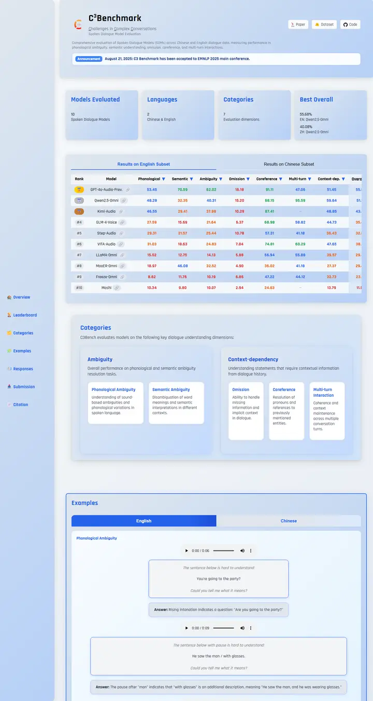

C3: A Bilingual Benchmark for Spoken Dialogue Models Exploring Challenges in Complex Conversations
A frosted-glass control panel tinted sky blue: a docked side rail, floating stat tiles and a leaderboard whose scores light up green, blue, orange and red.

Checked against the rendered page. Rajdhani loads only 500/700, so declared 400 and 600-900 weights render with those faces; several rules are redeclared later in the inline stylesheet and the rendered values are documented.
Why it is here
A dashboard-like glassy blue design with a side nav, stat cards, a colour-coded tabbed leaderboard, category cards and audio examples. A distinctive app-style look, though the wide left gutter is a little unbalanced.
Overview
Color Palette
Typography
Rajdhani
C3: A Bilingual Benchmark for Spoken Dialogue Models Exploring Challen
Abstract · Method · Results · BibTeX — 0123456789
KaiTi
C3: A Bilingual Benchmark for Spoken Dialogue Models Exploring Challen
Abstract · Method · Results · BibTeX — 0123456789
Arial
C3: A Bilingual Benchmark for Spoken Dialogue Models Exploring Challen
Abstract · Method · Results · BibTeX — 0123456789
Spacing & Shape
Page Modules
Guidelines
More like this

CRAFT: Training-Free Cascaded Retrieval for Tabular QA
A tidy product manual in pale blueprint blue, where every stage wears its own colored edge.

Efficient Self-Evaluation for Diffusion Language Models via Sequence Regeneration
A tidy stack of rounded cards washed in a blue-violet-apricot dawn, signed with a gradient wordmark.

FIGMA: Towards FIne-Grained Music retrievAl
A music journal on warm paper: a heavy Newsreader headline under a red kicker, big red serif numerals for the results, and figures resting in soft cream frames.

GuideDog: A Real-World Egocentric Multimodal Dataset for Blind and Low-Vision Accessibility-Aware Guidance
A quiet monograph page: one serif column, oxblood ink for the links, and a table that blushes only at its own row.

LaMI: Augmenting Large Language Models via Late Multi-Image Fusion
A careful conference handout: Noto Serif headings, navy outlined buttons and soft grey bands taking turns.

PairCoder++: Pair Programming as a Universal Paradigm for Verified Code-Driven Multimodal and Structured-Artifact Generation
A crisp white product page: a blue announcement strip, ink-black pill buttons and every figure on a soft-shadowed card.